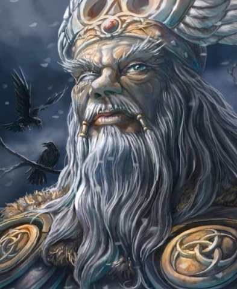

MITOS
TYR E O LOBO FENIR.
O deus Tyr era um caçador e um combatente. Usava uma pele de lobo como manto; a grande cabeça morta, cega e de dentes arreganhados, balançava acima de seu rosto barbudo, peludo.......

O OLHO DE ODIN
Já passado algum tempo após a criação do Universo, Odin contempla os Nove Mundos de Yggdrasil. Olhando lá do céu, onde fica Ásgard, reflete sobre a responsabilidade que tem sobre o Universo criado. Sente-se despreparado para tão árdua tarefa. Coça sua barba, passa a mã......
O ROUBO DO MJOLNIR
O martelo Mjolnir(se le miêlnir em portugues,''aquilo que esmaga'') é a arma preferida e o xodó de Thor,sagrado e poderoso deus do trovão,e protetor do homem trabalhador(é um deus muito cultuado pelos camponeses e agricultores,ja que Odin é mais poderoso e se dirige a guerra);esse martelo tem uma abilidade incrivel de voltar para a mão de seu dono quan.......

A CONSTRUÇÃO DO MURO DE ASGARD
Logo após os deuses construírem a fortaleza de Asgard (a morada dos deuses Aesir, na planície de Ida), apareceu um renomado construtor, que se ofereceu a cerca-la com um muro muito resistente. Como pagamento exigiu o Sol (die Sonne – lembrar que em Alemão, trata-se de um substantivo feminino) e a deusa......